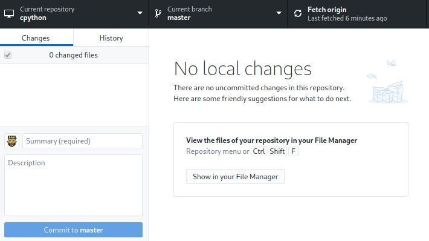

Um modelo mental para o git

O que é git

Controle de versão distribuído
O que são repositórios
Repositório
É onde o git guarda todas as informações sobre versões de um projeto
- Criação de um novo projeto
- Clone de repositório já existente
Criação de novo Repositório (Terminal)
$ mkdir projeto
$ cd projeto
$ git init
Initialized empty Git repository in /home/lincoln/projeto/.git/
Criação de novo Repositório (Github Desktop)
 |
Clone de projeto já existente (Terminal)
$ git clone git@github.com:python/cpython.git
Clone de projeto já existente (Github Desktop)
 |
 |
O que são commits

Commit
É a operação que armazena as modificações do projeto numa nova versão
Aplicação de modificações

Visualização de modificações
$ git diff
diff --git a/Programs/python.c b/Programs/python.c
index 84148f7767..96ce1534cb 100644
--- a/Programs/python.c
+++ b/Programs/python.c
@@ -12,6 +12,7 @@ wmain(int argc, wchar_t **argv)
int
main(int argc, char **argv)
{
+ printf("PYTHON IS FUN\n");
return Py_BytesMain(argc, argv);
}
#endif
Visualização do índice antes da adição
$ git status
On branch master
Your branch is up to date with 'origin/master'.
Changes not staged for commit:
(use "git add <file>..." to update what will be committed)
(use "git checkout -- <file>..." to discard changes in working directory)
modified: Programs/python.c
no changes added to commit (use "git add" and/or "git commit -a")
Adição ao índice
$ git add Programs/python.c
Visualização do índice após adição
$ git status
On branch master
Your branch is up to date with 'origin/master'.
Changes to be committed:
(use "git reset HEAD <file>..." to unstage)
modified: Programs/python.c
Criação do commit
$ git commit -m "Imprime uma frase encorajadora"
[master 6604f4a491] Imprime uma frase encorajadora
1 file changed, 1 insertion(+)
Visualização do índice após o commit
$ git status
On branch master
Your branch is ahead of 'origin/master' by 1 commit.
(use "git push" to publish your local commits)
nothing to commit, working tree clean
Índice antes da modificação (Github Desktop)

Aplicação de modificação (Github Desktop)

Visualização de commits (Terminal)
$ git log
commit c5c4b75a9ea59ddb64c8f1e3a8339db24406eb01 (HEAD -> master)
Author: Lincoln de Sousa <lincoln@clarete.li>
Date: Sat May 16 19:13:51 2020 -0400
Imprime uma frase encorajadora
commit 837f9e42e3a1ad03b340661afe85e67d2719334f (origin/master, origin/HEAD)
Author: Christian Heimes <christian@python.org>
Date: Sun May 17 01:05:40 2020 +0200
bpo-40645: Deprecated internal details of hmac.HMAC (GH-20132)
Visualização de commits (Github Desktop)

O que são branches

Branch
É um mecanismo que permite criar uma linha diferente de modificações de um certo commit em diante
Criação de nova branch
$ git checkout -b outra-branch
Listagem de branches
$ git branch
* master
outra-branch
Alterar a branch atual
$ git checkout outra-branch
Branches no Github Desktop
 |
 |
Diferença entre branches (Terminal)
$ git diff master..HEAD
diff --git a/Programs/python.c b/Programs/python.c
index 96ce1534cb..bab46be816 100644
--- a/Programs/python.c
+++ b/Programs/python.c
@@ -12,7 +12,7 @@ wmain(int argc, wchar_t **argv)
int
main(int argc, char **argv)
{
- printf("PYTHON IS FUN\n");
+ printf("PYTHON IS REALLY FUN\n");
return Py_BytesMain(argc, argv);
}
#endif
Diferença entre branches (Github Desktop)

Merge de duas branches (Terminal)
$ git checkout master
$ git merge outra-branch
Updating c5c4b75a9e..0e3ff5def5
Fast-forward
Programs/python.c | 2 +-
1 file changed, 1 insertion(+), 1 deletion(-)
Merge de duas branches (Github Desktop)

O que são Pull Requests

Pull Request
É a operação que permite que pessoas proponham modificações a um projeto em andamento
Criação de um Pull Request
- Faça o fork do repositório que você pretende contribuir
- Faça o clone do seu fork localmente
- Faça as modificações que você desejar
- Faça o commit de suas modificações localmente
- Faça o push de seus commits locais para o seu fork
- Abra um Pull Request